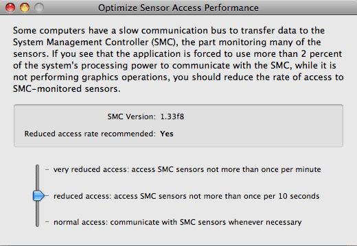

Controlling performance on Intel-based systems |
Some specific Mac models with Intel processors released after October 2008 are affected by a technical problem which has influence on the system load the monitor application is consuming to perform its job. On such computers, the application may need considerably more processing power than usual.
You don't need to read this chapter if you are using a PowerPC-based Mac, or a computer manufactured before October 2008.
All programs of the Hardware Monitor and Temperature Monitor application suite are optimized to execute their jobs without interfering with any other processes. They should consume almost no resources for their monitoring work, so that nearly all processing power is left to your standard applications. You can perform the following test to verify if the monitor application works as expected:
However, if the values are significantly higher (the CPU value is 10 or more), your system could be affected by the problem mentioned above.
It is normal that the CPU load taken by the monitor process will increase if you have several windows open or enable the Screen Display feature. Refreshing all graphical contents in regular intervals needs continuous processing power.
Intel-based Apple computers use a customized chip, the Apple System Management Controller (SMC), to collect data from most sensors, to control the fans, and to perform other services necessary to manage the computer. The central processor communicates with the SMC over a special internal data line.
On specific computer models, this communication bus to transfer data to and from the SMC appears to be relatively slow, so the main CPU sometimes has to wait for data to arrive at the other end of the communication line. If a lot of data has to be transferred over the SMC bus, access has to be delayed and to be coordinated very often when the communication line is busy.
Applications like Hardware Monitor and Temperature Monitor need to communicate with the SMC to get updated values from the system's sensors, so they have to use the SMC bus very intensively. On certain systems, Mac OS X forces the monitor applications to spend an unusually high amount of processing power for actively coordinating access to the SMC bus. This causes the affected application to consume much more active CPU time for SMC communication. Note that such an application cannot control access to the SMC via its own code. It has to use services and drivers of Mac OS X to do that. The processing time is consumed by indirectly called code parts within the Mac OS X kernel, not by code of the monitor application itself.
It is currently unknown if this effect is caused by a general design flaw in the bus hardware of specific chipsets, or by immature drivers in current versions of Mac OS X.
To avoid the problem that the monitor application may need an unusually high amount of processor performance to receive data from SMC-controlled sensors, the application can be configured to reduce SMC communication. Please note that not all sensors are operated by the SMC.
To check whether a specific sensor is controlled via the SMC, open the Sensor Overview window in the application and double-click the table row of the sensor in question. If the line Hardware in the sensor's detail information window shows the result Apple System Management Controller, each access to this sensor will require SMC communication.

If you like to optimize access to the System Management Controller, please do the following:
For the setting normal, the application will access the SMC sensors whenever it needs to. With the setting reduced, the application ensures to avoid accessing each SMC-controlled sensor more than once within a time interval of 10 seconds. At very reduced, access to each SMC sensor will be guaranteed to occur no more than once per minute.
When reducing the access rate, the time resolution of the measurements taken for SMC sensors won't be as accurate as before. The values recorded in the sensor history appear to remain constant within the access time interval. When displaying a history graph, the curves won't be as smooth in vertical direction, they will be more "stepped". Sensors not controlled by the SMC are not affected by the access rate setting.
Left: normal access rate * Right: reduced access rate